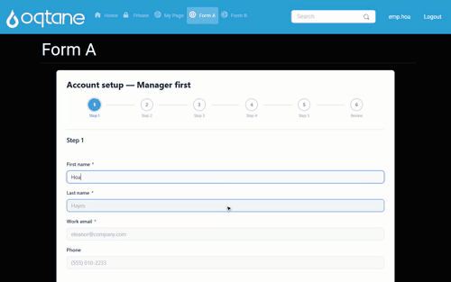

Approval workflows and the inbox
A submitted form can be routed to people for approval. This page explains what actually happens — including the two things that surprise most people the first time.
Watch a two-step approval run
The recording below is one submission travelling a real two-step flow, with three different users signed in along the way — nobody assigns anything by hand:

Steps shown
- An employee (emp.hoa) fills in the Account setup form and submits.
- The workflow's first Approval step names the Manager role, so the task appears in mgr.nam's My Inbox — with the form name, step label, a due date from the step's SLA and a priority flag. The manager opens it (the right-hand pane shows every form response), clicks Claim — the Assigned to Me counter ticks up — then Approve, writes an optional approval note, and Confirm Approval.
- The moment step 1 completes, the workflow creates the step 2 task for the Finance role: it is already waiting in fin.lan's inbox. Finance approves the same way, and the submission's status badge reads Approved.
The inbox is a three-pane workboard: folders and per-form filters on the left (Inbox, Assigned to Me, Forwarded, Completed, Starred), the task list in the middle, and the selected task's detail — form responses, history, and the workflow view — on the right.
How a task reaches a person
When a submission reaches an Approval node, MegaForm creates a task and pauses the workflow. Who gets that task depends on how the step is configured:
| Step names… | What happens |
|---|---|
A role (e.g. Finance) |
The task goes into a queue. Everyone in that role sees it under Inbox, and whoever takes it clicks Claim first. Claiming is what stops two approvers working the same record. |
| Exactly one user | The task is handed to that person: it lands in their inbox already assigned, with no Claim step, and they are emailed. |
| Several users | Queue again — with more than one candidate there is nobody to hand it to. |
The assignee is emailed when the task is created, provided the site has SMTP configured. If an approver forwards the task, the new assignee is emailed too.
A name that cannot be resolved to a real user leaves the task claimable rather than assigning it to nobody. A task nobody can see is worse than a task in a queue.
Where people see their work
Signed-in users open My Inbox. It is not an admin screen: every inbox route only requires the user to be signed in, so an ordinary employee can approve without any administrative permission.
Two ways to get there:
- A page of its own — put a MegaForm module on a page and, in Module settings → Display mode, choose My Inbox. The module then is the inbox. (Admins keep a small bar above it with a way back to the settings, so pinning a module is never a one-way door.)
- From the dashboard — the admin dashboard has an inbox entry for the signed-in user.
The inbox groups work into Inbox (available to claim), Assigned to Me, Forwarded, Completed and Starred. Opening a task shows the submission, the approval history, and the Approve / Reject / Forward / Comment actions.
What happens on approve or reject
- Approve completes the task and resumes the workflow. If the next node is another Approval step, a new task is created for that step's role or user — this is how a two-step chain (Manager, then Finance) works.
- Reject completes the task with the rejected outcome and follows the workflow's rejected branch (typically: tell the submitter, end).
- The submission's status is updated at each step (
pending_approval→manager-approved→approved, orrejected), so the submissions list shows where every record stands.
Building the workflow
In the builder, open the BPMN / Workflow tab and either draw the flow or start from a sample:
| Sample | Shape |
|---|---|
| Single approval | One reviewer approves or rejects; the submitter is told either way. |
| Two-step approval | Manager approves first, then Finance. A rejection at either step ends the flow. |
| Assign to one person | The task is handed to a named user — it arrives assigned and they are emailed. |
| Approval with SLA escalation | A 48-hour task; overdue or rejected work escalates. |
On each Approval node you set:
- Candidate roles — who may claim it (a queue).
- Candidate users — put exactly one username here to hand the task to that person instead.
- Due in hours — the SLA used by the escalation sample and by the overdue count in the inbox.
- Approved / rejected submission status — the status written on the submission at each outcome.
Two things worth knowing
Roles are the host's roles. MegaForm does not maintain its own user directory: Manager,
Finance, HR Review and the rest are Oqtane/DNN roles, and a user is in them because the host says
so. Create the role and add the user in the platform's user management first, then name it in the
workflow.
Email needs SMTP. The notification is real, but it goes out through the host's mail settings. On a site with no SMTP host configured, the task still appears in the inbox — nobody is simply told about it by mail.